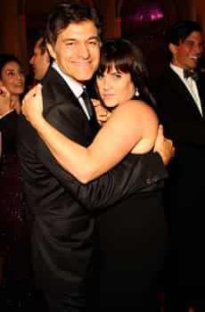

Daryush "Roosh" Valizadeh created ROK in October 2012. You can visit his blog at RooshV.com or follow him on Twitter and Facebook.


Mehmet Oz, more commonly known as Dr. Oz, is the most famous and “most trusted” doctor in America. People bow down before his superior knowledge, healer skillz, and telegenic good looks, as described in a recent New Yorker profile.
“I worship you, Dr. Oz,” one woman told him. Another threw her arms around his neck. “I haven’t seen a doctor in eight years,” she said. “I’m scared. You are the only one I trust.”
Now let’s take a look at his wife:


The most trusted doctor in America has a fat, unhealthy wife. That fact warrants some additional investigation…
Lisa is intelligent, articulate, and unconventional; she eats no meat (Oz does)
Alright.
[Lisa] is wholly opposed to genetically modified foods (Oz is ambivalent)
Sounds reasonable.
[She] has repeatedly expressed reservations about the value of some vaccinations
Oh boy.
It didn’t take long for Oz to become convinced that a patient’s state of mind could be important to a successful surgical outcome.
And where did that convincing come from?
With his father-in-law’s encouragement, he began to explore music therapy, energy fields, and therapeutic touch, and he began to offer them to his surgical patients. Here, too, Lisa played a major role; she is a Reiki master, and Oz soon became famous at New York-Presbyterian, not to mention within the broader surgical community, for encouraging the practice of Reiki in the operating room. Reiki, the Japanese art of laying on hands, is based on the notion that an unseen, life-giving source of energy flows through our bodies. Oz hired a Reiki master named Julie Motz to stand in the operating room, where, she has said, she would attempt to harness “the body’s own energy to help patients survive risky operations, such as heart transplants.” Many of Oz’s colleagues, including some who worked directly with him, thought that permitting a Reiki master to enter the surgical suite at New York-Presbyterian was ludicrous.
Being famous and married to a fatty is no crime and does not warrant my mockery alone, but not only does she cause him to go against medical science, she outright controls him like a puppet:
[Dr. Oz had] to explain publicly that, although he disagreed with Lisa, at home she was the boss. “I’m going to get it, but, I’ll tell you, my wife is not going to immunize our kids,” he said, on “Campbell Brown.” He added that he was powerless to reverse her decision, because “when I go home I’m not Dr. Oz, I’m Mr. Oz.” (Oz still disagrees with Lisa. In January, in front of an audience, he gave the CNN host Piers Morgan his first flu shot, and encouraged millions of viewers to get one as well. At home, however, the situation hasn’t changed. He remains Mr. Oz.)
The most famous doctor in America, and probably the richest doctor in America, with a million fans, gets bossed around by his man-jawed wife like a dog. It gets even more humiliating….
Lisa Oz takes some credit for launching her husband’s television career. “My favorite thing to do in the world is hang out with my husband and boss him around,” she said. “His favorite thing to do is to work. There was no way for me to go into the operating room and hang out with him, and he was spending all of his time there.” She went on, only half in jest, “So I had this scheme, about a television show where we would work together and I would be his producer, so I could boss him around.”
During the inevitable divorce trial, I believe she’s going to want a little more than “some” credit when her attorney demands 50% of his wealth in addition to alimony payments that allow her to live a life that she has become accustomed to. And there’s more…
Oz then introduced Jeffrey Smith, the author of “Genetic Roulette,” who says that engineered foods may cause many serious diseases, including colitis, asthma, and cancer. Smith has also made a film version of the book; Oz, for the sake of full disclosure, noted that “my wife, Lisa, was a narrator in Jeffrey’s film.”
[…]
When I asked Lisa about her involvement, she said that Smith presented a point of view that needed to be heard, and that the safety of genetically modified foods has not been proved. “I think Mehmet and I both feel, in general, that our mission is to empower the viewer or reader,” she said.
This woman has a vice grip around Dr. Oz’s balls, embarrassing him in a national publication, and he takes it like the pussy that he is. Dr. Oz is a disgrace to men everywhere. As long as his behavior is seen as “normal,” more men will be pressured to follow in his mangina footsteps.
Read Next: Life Advice From The Doctor